Las desafortunadas declaraciones en Israel de Lionel Jospin suponen un traspié sin precedentes para el primer ministro francés , que sale muy debilitado frente a Jacques Chirac en la carrera hacia las próximas Presidenciales.
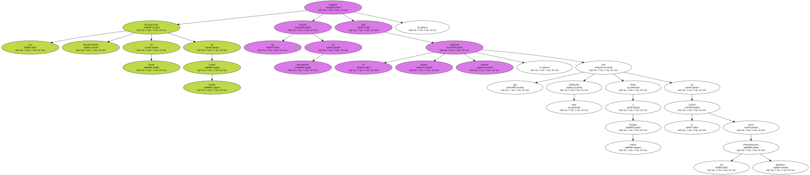El fallido intento del socialista Jospin de desmarcarse del presidente , el neogaullista Jacques Chirac , y marcar su personalidad en la escena internacional - arena reservada al " número uno " del Estado - ha hundido al primer ministro en un terreno minado.
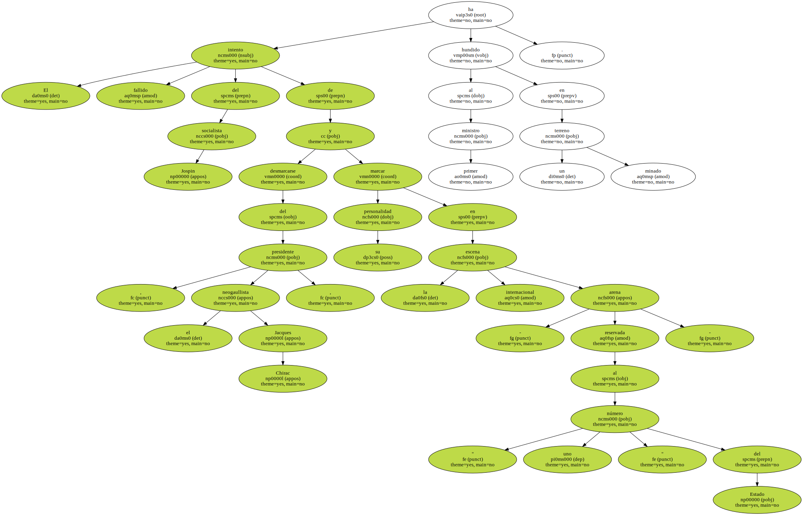Además de desatar un incidente diplomático en el mundo árabe , con ese desliz Jospin se ha granjeado en casa un torrente de críticas también sin precedentes desde su llegada al poder , en julio de 1997.
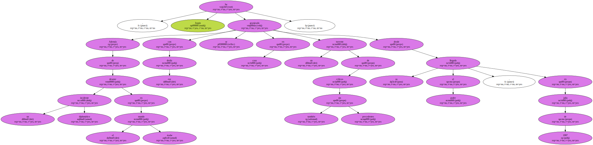Al tildar de " terroristas " los ataques de Hizbulá contra las fuerzas israelíes en el sur del Líbano , el pasado jueves en Jerusalén , Jospin ha dañado su imagen y la de Francia en Oriente Medio al asestar una patada a la tradicional política pro árabe , institucionalizada en 1967 por Charles de Gaulle.

La " monumental " metedura de pata del jefe del Gobierno no sólo no le ha puesto contra las cuerdas , sino que ha obligado a sus colaboradores , en una situación embarazosa , a justificarla " con cuentagotas " , a medida que pasan los días , apuntan los analistas.
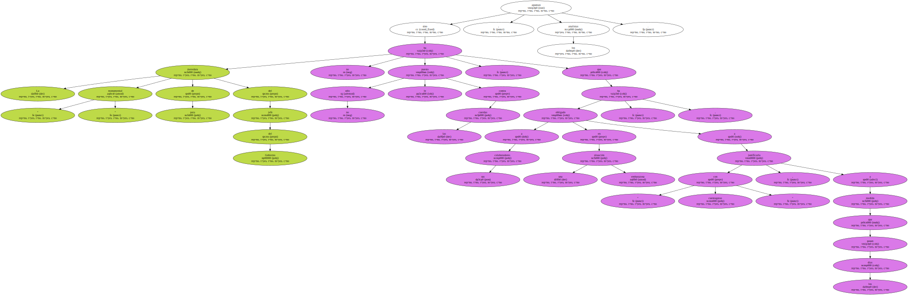Ha sido Hubert Védrine , titular de Exteriores , el encargado de intentar encauzar las aguas al puntualizar que la política de Francia en Oriente Medio " no cambia " y que la reacción de Jospin salió " del corazón y de la convicción ".
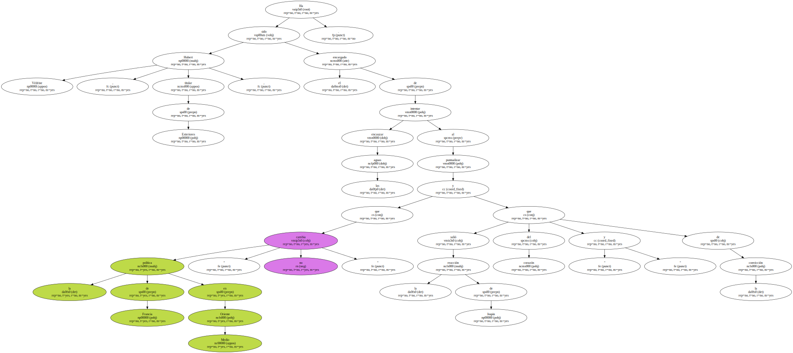Hoy , lunes , fuentes diplomáticas francesas arguyeron que se trató de " un lapsus " , después de que Jospin rectificara 24 horas más tarde al sustituir " terroristas " por " actos de guerra " , durante su visita oficial de tres días a Israel y los territorios palestinos.
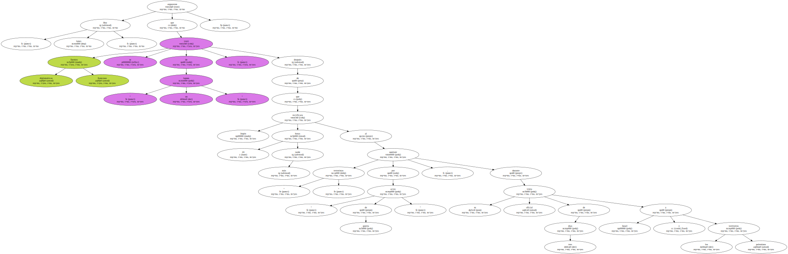Jospin intenta justificar así su " resbalón " ante la opinión pública y quitar hierro al incidente con el mundo árabe , donde sus palabras han desencadenado una ola de ira , antes de deber rendir cuentas el miércoles a Chirac , quien le convocó y llamó al orden.
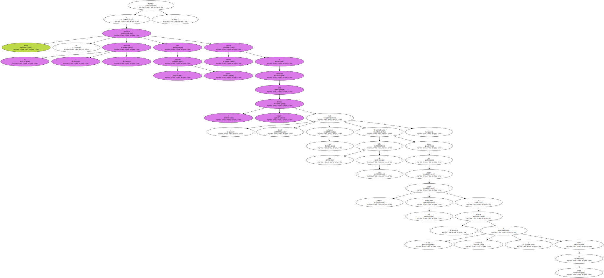Pero la tormenta provocada por el jefe del Gobierno , diplomático de formación , no amaina.
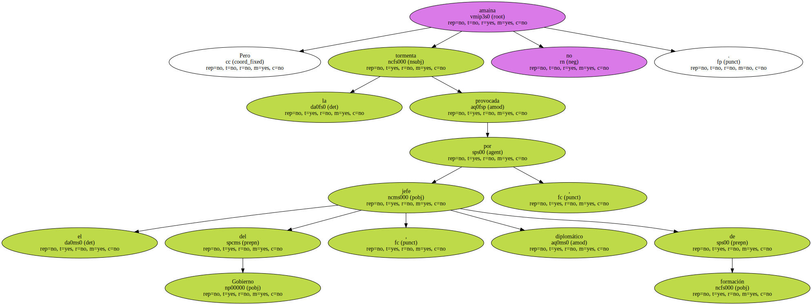El episodio supone el traspié más grave de Jospin desde su ascenso al poder , ya que hasta ahora había demostrado ser un maestro y equilibrista en el arte de esquivar adversidades y mantener una difícil cohesión en el Ejecutivo de coalición de izquierdas que encabeza , manteniéndose en la cresta de la popularidad.
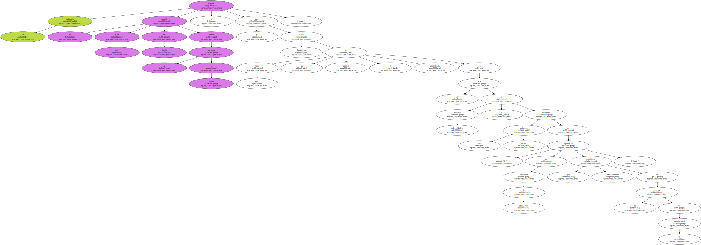Pero con este patinazo verbal , Jospin ha puesto en evidencia que " puede equivocarse " , afirmó hoy un comentarista.
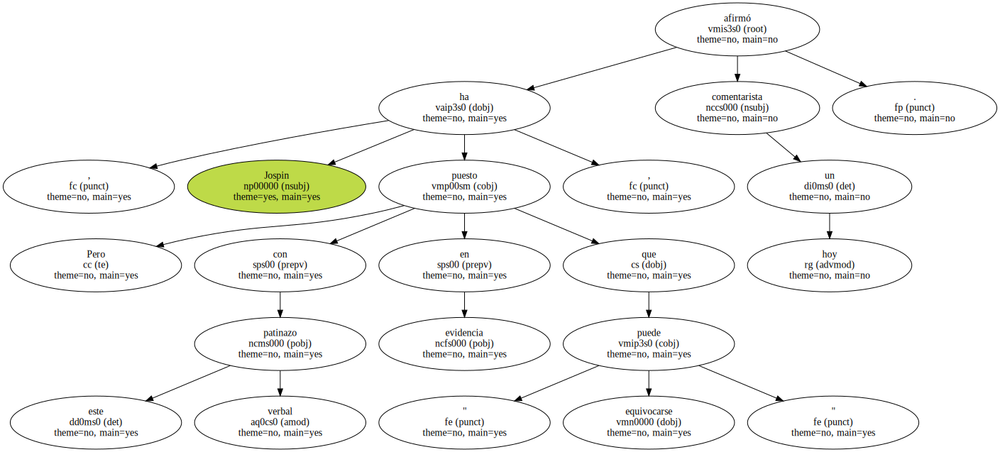Mientras , a Chirac - furioso de que Jospin haya invadido una parcela en la que la Constitución le brinda primacía - no le gusta nada que este desliz pueda minar sus incesantes esfuerzos para relanzar el protagonismo de París en Oriente Medio.
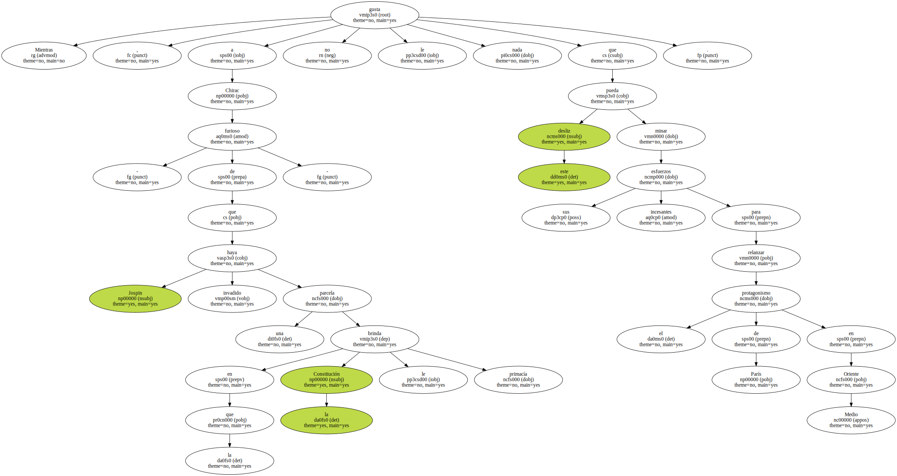El tropezón del dirigente socialista envalentona , en cualquier caso , a Chirac , quien intentará sacar dividendos de cara a las Presidenciales del 2002 , carrera hacia la que los dos líderes ya se han lanzado , pese a no haber anunciado sus candidaturas.
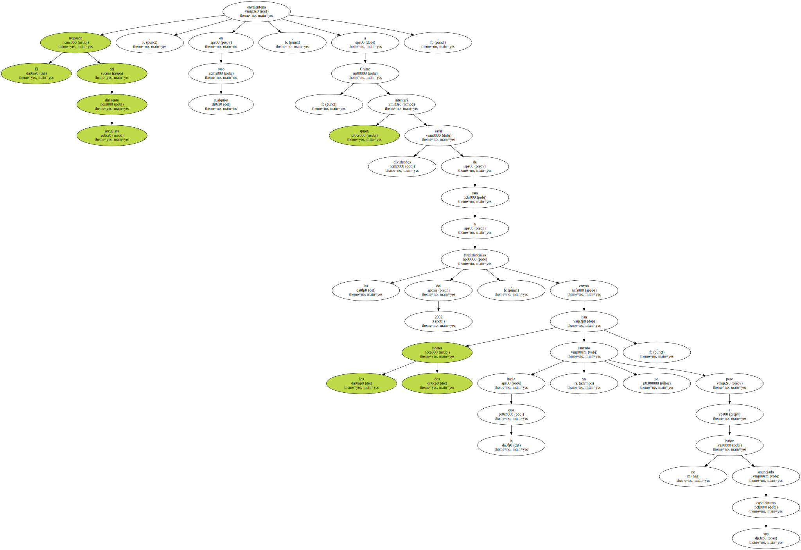" Pan bendito para el Elíseo . Chirac aprovechará la ocasión para dar lecciones " , subraya un comentarista de " Liberation ".
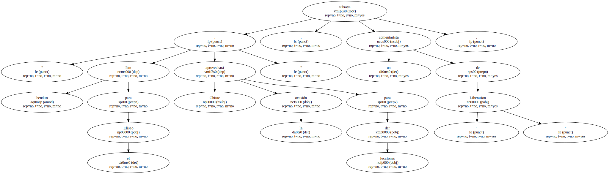Chirac y Jospin están prácticamente empatados en sus altas cotas de popularidad.
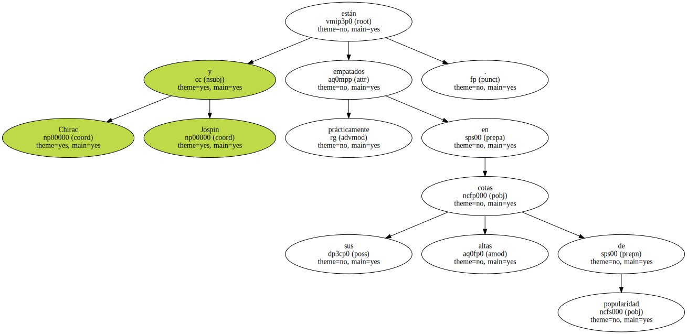El incidente también beneficia a la derecha francesa , que no pierde baza en su desesperado intento por mejorar su imagen después del desgarro sufrido en sus filas a raíz de los reveses electorales.
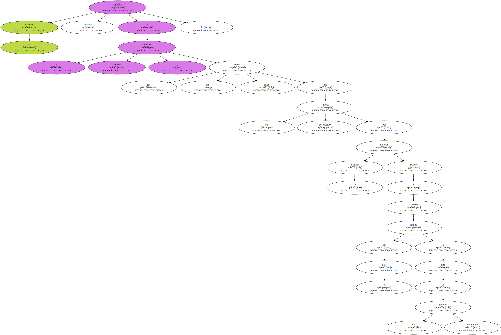La izquierda ha hecho una piña en torno a Jospin al tildar sus palabras de " discurso franco " , mientras que la derecha ha denunciado una " torpeza grave " , " un fiasco , fruto perverso de la cohabitación ".
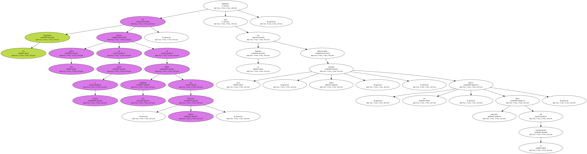Los medios de comunicación , que no han perdonado de forma unánime a Jospin este patinazo , hablan hoy de crisis en la cúspide del Estado y de " fractura " en la cohabitación.
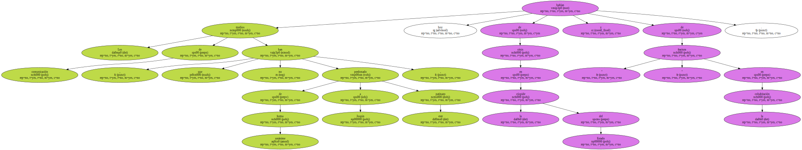" Jospin : el error " , titula hoy en portada el diario conservador " Le Figaro " , que desgrana los tres días que " han fracturado la cohabitación " y el " paso en falso " del responsable del Gobierno.
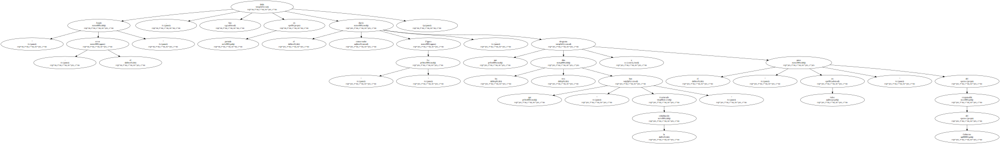Según el rotativo de izquierdas " Liberation " , " las piedras de Biz Zeit han transformado la metedura de pata de Jospin en falta grave ".
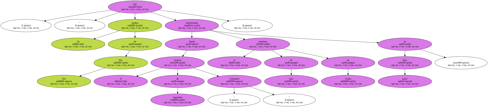" Esta agresión ha demostrado que el primer ministro francés no sólo ha perdido un tanto en la batalla que le enfrenta a Chirac , sino que se ha visto desbordado por las consecuencias de su propia acción ".
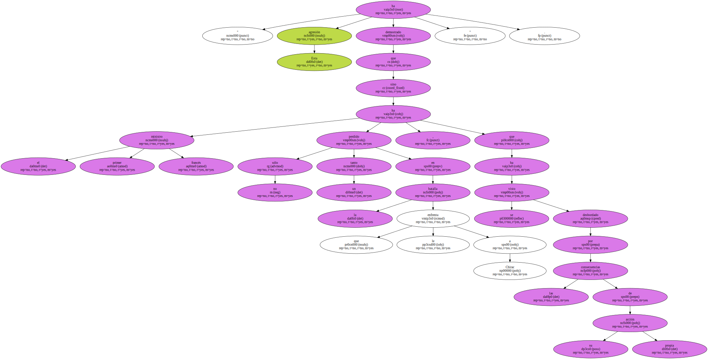" Más que un hecho de convicción , sus frases sobre el Hizbulá han aparecido como una maniobra política en el horizonte mediocre de la cohabitación preelectoral " , sentencia el periódico.
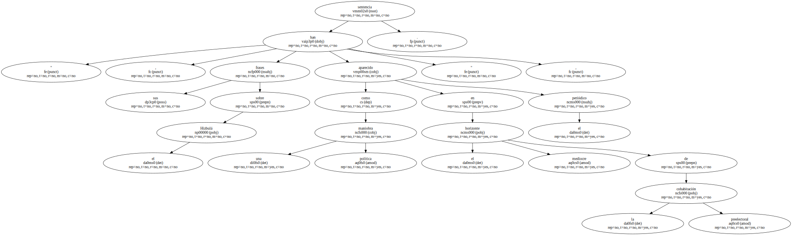En medio de la " tormenta " que envuelve al primer ministro , " France Soir " titula " Jospin-Chirac: la guerra de las piedras " y resalta que esta divergencia en política exterior abre una crisis en la cúspide del Estado , a la vez que añade : " Jospin provoca la intifada en París ".
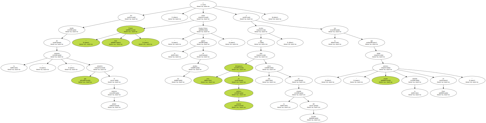